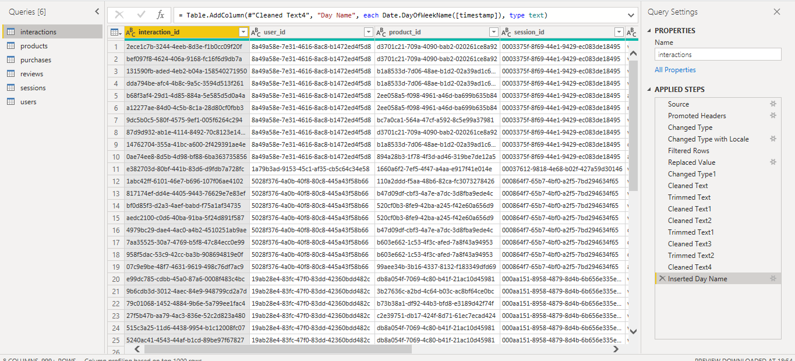

POWER BI PROJECT
E-Commerce Customer & Sales Analysis
An interactive Power BI analysis exploring sales performance, customer behavior, purchasing conversion, and product reviews.
PROJECT OVERVIEW
Understanding customer behavior and sales performance
This project analyzes e-commerce interactions, purchases, products, customer information, sessions, and reviews to understand how customer activity translates into purchasing behavior. The analysis combines data preparation, relational modeling, SQL and DAX analysis, and Power BI visualization.
DATA STRUCTURE
Understanding the tables behind the analysis
The project uses six related tables covering customer activity, products, purchases, reviews, sessions, and users.
Interactions
Records customer interactions with products.
Products
Contains product attributes and performance information.
Purchases
Contains completed purchase transactions.
Reviews
Contains customer ratings and review activity.
Sessions
Contains information about customer sessions.
Users
Contains customer demographic and profile information.
DATA PREPARATION
Cleaning and preparing the data
I used Power Query to prepare the raw tables before analysis and modeling. The process included reviewing the source data, checking data types, standardizing values, handling missing values, and preparing the tables for analysis.
Source
Loaded the individual datasets into Power Query for inspection and preparation.
Data Cleaning
Reviewed missing values, inconsistent values, and fields requiring standardization.
Transformation
Standardized fields and prepared columns for analysis and relationships.
Validation
Checked the prepared tables before moving into the Power BI data model.

DATA MODELING
Connecting customer activity, products and transactions
After preparing the individual tables, I created relationships between the datasets using shared identifiers such as product ID, user ID, session ID, and interaction ID. This allowed customer interactions, purchases, products, sessions, and reviews to be analyzed together.

Products → Interactions
The product_id connects products
to customer interactions.
This allows product information to be analyzed
alongside views, clicks, cart activity, and
other tracked interactions.
Products → Purchases
The product_id connects products
to purchase records.
This allows product-level purchasing activity,
quantity, and revenue to be analyzed.
Products → Reviews
The product_id connects products
to customer reviews.
This makes it possible to analyze product
performance alongside ratings and review activity.
Users → Customer Activity
The user_id connects the users table
with customer activity recorded across the model.
This allows demographic and customer attributes
to be used when analyzing behavior and purchases.
Sessions → Interactions
The session_id connects sessions
to individual interaction records.
This provides context for understanding the
sequence of customer activity during sessions.
Sessions → Purchases
The session_id connects purchases
to the sessions in which purchasing activity
occurred.
This supports analysis of session conversion
and purchasing behavior.
Interactions → Purchases
The interaction_id connects purchase
records with the interaction associated with
the purchase.
This supports analysis of how interactions
progress toward purchasing activity.
Calendar → Date Analysis
The Calendar table provides a dedicated date structure for analyzing activity and purchasing patterns across time. This supports consistent monthly and date-based analysis in Power BI.
THE BUSINESS QUESTIONS
What was I trying to understand?
Sales Performance
Which products and categories are driving revenue and how is overall sales performance changing?
Customer Behavior
How are customers interacting with products, and where are potential customers dropping off?
Customer Experience
What do customer reviews and ratings reveal about product experience and satisfaction?
01 — PRODUCT PERFORMANCE & SALES
Product Performance & Sales

KEY INSIGHTS
What the data revealed
Revenue Performance
The analysis highlights the products and categories contributing most to overall revenue, helping identify where sales performance is concentrated.
Product Performance
Comparing product-level performance reveals differences in purchasing activity and helps identify products that deserve closer attention.
Customer Activity
Customer interactions and purchases provide context for understanding how engagement translates into sales.
02 — CUSTOMER BEHAVIOR & CONVERSION
Customer Behavior & Conversion

KEY INSIGHTS
What the data revealed
Low Purchase Conversion
Out of 100K recorded interactions, the purchase rate was 3.4%, showing that only a small share of tracked interactions resulted in a purchase.
High Abandonment
The abandonment rate was 96.56%, indicating that most tracked interactions did not progress to a completed purchase.
Customer Engagement
Average dwell time was 17.49K seconds, providing a metric for investigating how long users remained engaged during their interactions.
03 — CUSTOMER REVIEWS & RATINGS
Customer Reviews & Ratings

KEY INSIGHTS
What the data revealed
Average Rating
Customers gave an average rating of 4.05 out of 5, providing an overall measure of customer feedback across the reviewed products.
Review Volume
The analysis contains 1,253 customer reviews, providing a substantial set of feedback for understanding customer sentiment and product experience.
Room for Deeper Analysis
The overall rating provides a useful summary, but breaking ratings down by product or category would help identify where customer experience differs.
MY APPROACH
From raw data to insights
Data Preparation
Explored and cleaned the dataset using Excel, SQL and Power Query to prepare the data for analysis.
Data Modeling
Built relationships between the relevant tables using product, user, session, and interaction identifiers to create a structured analytical model.
Analysis
Used SQL and DAX to investigate customer behavior, interactions, purchases, and review metrics.
Visualization
Built interactive Power BI dashboards to communicate patterns, KPIs, and business insights clearly.
Tools Used
PROJECT SUMMARY
Turning data into business insights
This project transformed raw e-commerce data into an interactive analytical report covering sales performance, customer behavior, purchasing activity, and customer reviews. The process involved preparing the data, building a relational model, analyzing the data, and communicating the findings through Power BI dashboards.
Sales
Analyzed product and category performance to understand where revenue and purchasing activity were concentrated.
Customers
Examined customer interactions and purchase behavior to identify patterns in engagement and conversion.
Reviews
Analyzed customer ratings and review volume to provide a clearer view of product experience.